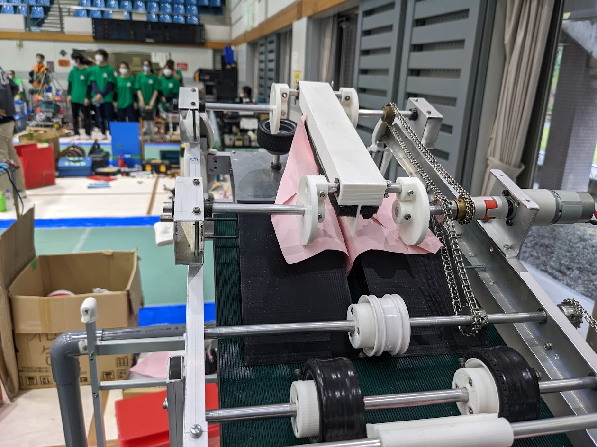

高専ロボコン
マネージャー・制御・操縦
木更津高専Aチームで、マネージャーと制御を担当しました。全国大会では操縦も担当し、2年連続で出場しました。
ロボコンの活動を見る

Hizk
意味から変換するIMEの開発
Mozcをベースに、GPT-4で言葉を推測するIMEを開発。Kloudハッカソン #4で優秀賞を受賞しました。
Hizkの制作内容を見る祗園祭Webサイト2023
Webサイトの共同開発
木更津高専の文化祭「祗園祭」の公式Webサイトを、プログラミング研究同好会のメンバーとして共同開発しました。
祗園祭サイトの制作内容を見る